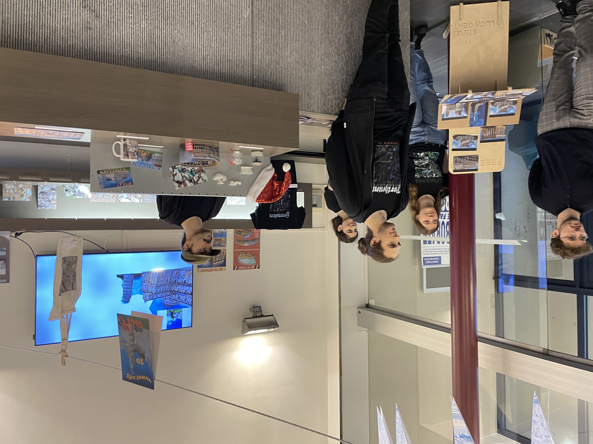

student results

fig 1.group1 . 2023.

fig 1.group1 . 2023.

fig 1.group2 . 2023.

fig 1.group2 . 2023.

fig 1.group2 . 2023.

fig 1.group3 . 2023.

fig 1.group3 . 2023.
The students form a multidisciplinary team (arts, architecture and engineering).
Each student is expected to use the knowledge of the other disciplines in a joint project "sense adapt create".
In the project, the teams will try to perceive the environment, in the broad context, through sensors.
These measurements will be used to gain insight into the non-visible layers of the environment, in a creative way.
Emerging technologies such as VR/XR/AR will be used to support the creative thinking and making processes.
The student will be assisted by a team of experts in each domain.
General Description Assignment Elective "Creative Makers” (sem.1)
(roles defined in Toledo)
Creator
| Time in Hours | Friday 07/10 @Sint Niklaasstraat room 101 |
Friday 14/10 @Technologycampus Room: TCG B227 |
Friday 21/10 @Technologycampus Room: TCG B227 |
Friday 28/10 @tba |
Friday 04/11 @tba |
Friday 11/11 @tba |
Friday 18/11 @tba |
Friday 25/11 @tba |
Friday 02/12 @tba |
Friday 09/12 @tba |
Friday 16/12 @tba |
Friday 23/10 @tba |
| 9.00 | Elective introduction
Brief introduction to the elective and showcase of the existing projects and studentwork. Given by Corneel Cannaerts The presentation can be found here duration: 9.00 - 11.30 |
Making groupsduration: 9.00 - 9.30 |
How to Talk to Sensors?In this interactive workshop, students will learn how to program an ESP32 board to read out a sensor. The general workflow, on how to program and how these platforms work, will be presented. After this session, the students should be able to read out the other sensors provided by the documentation we will give.
Given by Gilles Callebaut Link to the workshop files duration: 9.00 - 13.00 |
Houdinitba duration: 9.00 - 12.00 |
Projecttba duration: 9.00 - 13.00 |
No Course |
Projecttba duration: 9.00 - 13.00 |
Projecttba duration: 9.00 - 13.00 |
Projecttba duration: 9.00 - 13.00 |
Projecttba duration: 9.00 - 13.00 |
Projecttba duration: 9.00 - 13.00 |
Expotba duration: 9.00 - 13.00 |
| 9.30 | Photogrammetry workshop
In this short workshop the students will learn how to to make photogrammetry models from photos.
The tools we will use are Polycam, RealityCapture and Agisoft Metashape. After we succesfully created our 3d models, students can dive deeper in how we can automate certain processes with bash, ffmpeg, RealityCapture CLI, SideFX Houdini non-commercial and imagemagick. All videos should be uploaded to an ssd that will be going around in class. Given by Joris Putteneers Link to the workshop files duration: 9.30 - 12.00 |
|||||||||||
| 10.00 | ||||||||||||
| 10.30 | ||||||||||||
| 11.30 |
obj_glitching workshop
In this short workshop the students will generate glitched object files by diving into the structure of an .obj file and dissecting the vertex, face and vertex texture information. By translating, transforling filtering and manipulating the data, the object becomes obfuscated and disoriented.
Because we are operating on high and low level operations, and of the diverse tool use, the course is interesting for engineers, architects and artists. After the workshop, students will have a surface level understanding of the geometric make-up that makes an .obj file. Given by Joris Putteneers Link to the workshop files. duration: 11.30 - 13.00 |
|||||||||||
| 12.00 | ||||||||||||
| 12.30 | gravity sketch/medium workshop
Workshop about VR and the VR workflow, accompanied with a presentation.
After the presentation is finished, we will dive into gravity sketch and learn the basics. The students will learn how to get familiar with the different operations and ways of navigating VR space. Students will be able to import their photoscanned models with textures into a VR environment, modify them, and export their creations to the cloud. Three devices will be available, one Oculus rift S, and 2 oculus quest 2's. Given by Joris Putteneers Link to the presentation duration: 12.00 - 13.00 |
Unitytba duration: 12.30 - 13.00 |
Intermediate reviewtba duration: 12.00 - 13.00 |
|||||||||
| 13.00 |
| Key | Abvriations | Details | |
| Support | [Ar]: Architecture | Sharing is caring: Moment to share each group's progress | |
| Recreation | [A]: Arts | Worksession: Students work independently on the project | |
| Discovery | [E]: Engineering | Intermediatie review: More elaborate progress report, with feedback | |
| Develop | Showtime: Presentation of work, graded by the team | ||
| Deliver |
fig 1.group1 . 2023.
fig 1.group1 . 2023.
fig 1.group2 . 2023.
fig 1.group2 . 2023.
fig 1.group2 . 2023.
fig 1.group3 . 2023.
fig 1.group3 . 2023.